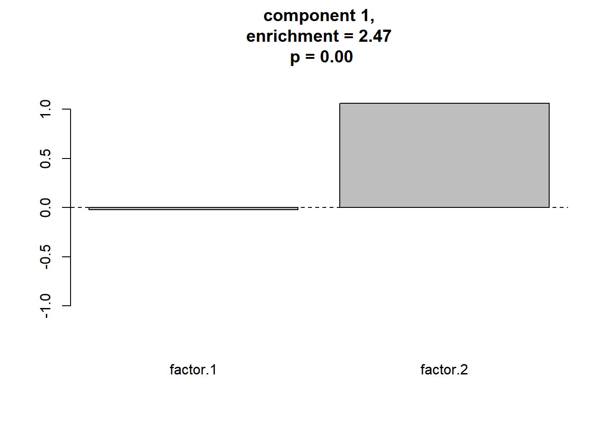

Gerlachの分析法
ここでは，要素技術編の3つの方法を組み合わせてGerlachらにならった一通りの解析を行ってみます。
準備
本ページで使用するパッケージがインストールされていない場合は，以下の コマンドをコンソールに入力してインスト―ルしてください。
install.packages("psych")
install.packages("GPArotation")
install.packages("ks")
install.packages("mvtnorm")必要なパッケージを読み込みます。
library(psych)
library(GPArotation)
library(ks)
library(mvtnorm)
library(mclust)データの生成
要素技術編と同様，項目\(j\)に対する回答が \(y_{j} = a_{j1} f_{1} + a_{j2} f_{2} + \epsilon_{j}\)で与えられるとするモデルを考えます。
ただしここでは，\(f_{1}\)，\(f_{2}\)は2次元の混合正規分布から生成します。つまり，標準的な因子分析の仮定と異なり，因子にクラスター構造があるものとします。
# 乱数のシードを設定
set.seed(1)
# サンプル数
n.sample <- 1000
n <- 100 # 回答者数
p <- 10 # 項目数
# 因子負荷
a1 <- c(2,2,2,2,2,0,0,0,0,0) + rnorm(10,mean=0,sd=0.5) # factor 1 項目1-5に大きい値を持つ
a2 <- c(0,0,0,0,0,1,1,1,1,1) + rnorm(10,mean=0,sd=0.5) # factor 2 項目6-10に大きい値を持つ
# 仮想回答データを入れる変数のメモリを確保
y <- matrix(nrow = n.sample, ncol = p)
# 真の因子の値を入れるデータフレーム
df_fs <- data.frame(matrix(nrow = n, ncol = 2))
# 3つのコンポーネントからなる正規分布を想定する
# 各コンポーネントの平均，分散・共分散行列を設定
true_means <- list(c(0,4), # コンポーネント1の平均ベクトル
c(-3,-1), # コンポーネント2の平均ベクトル
c(3,-1) # コンポーネント3の平均ベクトル
)
true_sigmas <- list(diag(2), # コンポーネント1の分散・共分散行列
diag(2), # コンポーネント2の分散・共分散行列
diag(2) # コンポーネント3の分散・共分散行列
)
# 混合比を設定
true_pi <- c(0.4,0.3,0.3)
# データを生成
dat <- matrix(0,nrow = n.sample, ncol = 2)
for (idx in 1:n.sample) {
# 選択するコンポーネントのインデックス
idxk <- which.max(rmultinom(1,1,true_pi))
dat[idx,] <- rmvnorm(n = 1,
mean = true_means[[idxk]],
sigma = true_sigmas[[idxk]] )
# 回答者idxの仮想回答データ
y[idx,] <- a1 * dat[idx,1] + a2 * dat[idx,2] +
rnorm(p, mean = 0, sd = 2) # 独自因子
# 真の因子スコアを記録
colnames(df_fs) <- c("f1", "f2")
df_fs[idx,] <- dat[idx,]
}
# 観測される仮想回答データをデータフレームに格納
df_data <- data.frame(y)生成データの確認
真の因子スコアの散布図を作ります。
par(pty = "s")
plot(df_fs$f1, df_fs$f2,
pch=".",cex = 2, xlab="f1", ylab="f2")以下でデータの相関行列をプロットします。
cor.plot(cor(df_data), numbers = T)
探索的因子分析の実行
因子数を決める
スクリープロットで因子数を決めます。
VSS.scree(df_data)
因子数は2とします。
因子負荷の推定
以下では最尤法により因子負荷を推定しています。 また，varimax法で因子負荷の直交回転を行っています。
res_fa <- fa(r = df_data,
nfactors = 2, # 因子数
rotate = "varimax", # 回転法はvarimaxを指定
fm = "ml" # 最尤法を指定
)
cor.plot(res_fa, numbers = T)概ね，真の因子構造を反映した因子負荷が得られました。
因子スコアの推定
推定した因子分析モデルから 回答者ごとの因子スコア (\(f\)) を推定します。
fsc <- factor.scores(df_data,
f = res_fa,
method = "Harman")
df_sc <- data.frame(fsc$scores)
names(df_sc) <- c("factor.1","factor.2")推定された因子スコアをプロットしてみます。
par(pty = "s")
plot(df_sc, pch=".",cex = 2)データ生成に使った因子の値がよく再現されています。
因子分析のモデルは因子は正規分布と仮定されているのですが， この仮定が満たされなくても真の因子スコアが歪みなく， 構造が再現されるということは重要だと思います。 そうでないと，同様にして求めた因子スコアを扱った Gerlachらの結果は疑わしいものになってしまうためです。
しかし，ここでのデータは2因子でかつ比較的単純な ものであり，Gerlachらの解析で推定された因子スコアの 妥当性はどの程度のものか，ということはさらなる検討が 必要だと思います。
GMMのフィッティング
BICにより，コンポーネント数を選択します。
BIC <- mclustBIC(df_sc,
G = 1:15, # 候補となるコンポーネント数
modelNames = "VVI"
)
plot(BIC)
コンポーネント数が3のときにBICの値が最大 (MClustの仕様ではBICが大きい方が良いモデル) となります。
BICで選択されたモデルのフィッティングの結果を見てみます。
mod.GMM <- Mclust(df_sc, x = BIC)
par(pty = "s")
plot(mod.GMM, what = "classification")因子スコアのクラスター構造に対応する推定結果が得られているようです。
各コンポーネントの平均をプロットする。
ここでは，コンポーネントの平均ベクトルを棒グラフで表します。 ここの例のように，2次元データの場合は上のように2次元分布 状にコンポーネントの中心をプロットできるので，わざわざ 棒グラフにする意味はあまりありません。しかし，Gerlachらのように 因子の数が5つ，すなわち5次元データの場合は このようなグラフでとらえるしかありません。
collist <- list("blue","red","green", "purple", "orange")
n.component <- mod.GMM$G
par(mfcol = c(1,n.component))
for (idx in 1:n.component) {
barplot(mod.GMM$parameters$mean[,idx], names.arg = c("1","2"),
col = collist[[idx]], ylim = c(-1.2,2),
main = sprintf("component %d", idx),
xlab = "factor")
abline(h = 0, lty = 2)
}ヌルモデルとの比較による評価
各コンポーネントの平均の座標の密度と，その座標におけるヌルモデルの密度をカーネル密度推定により推定します。要素技術編と異なり，全体の座標点ではなく，GMMのコンポーネントの平均の座標点でこれを行います。
# 各コンポーネントの平均の座標
# 列はコンポーネントのID, 行は因子に対応。
component.centers <- t(mod.GMM$parameters$mean)
n.shuffle <- 1000 # シャッフルする回数
n.component <- mod.GMM$G # コンポーネント数
# 元データの各コンポーネントの平均の位置における密度の推定
Hpi <- ks::Hpi.diag(x = df_sc)
k <- ks::kde(x = df_sc, H = Hpi,
eval.points = component.centers)
density.original <- k$estimate
# シャッフルデータの密度格納用行列
density.shuffle <- matrix(0, n.shuffle, nrow(component.centers))
for (idxs in 1:n.shuffle) {
# シャッフルする
sc_shuffeled <- apply(df_sc, MARGIN = 2, sample)
# シャッフルデータの密度推定
k <- ks::kde(x = sc_shuffeled, H = Hpi,
eval.points = component.centers)
density.shuffle[idxs,] <- k$estimate
}コンポーネントごとのヌルモデルとの比較結果をプロットします。 シャッフルした回数だけ得られたヌルモデルの対数密度をヒストグラムで，元のデータの対数密度を赤い縦棒で表します。
par(mfcol=c(1,n.component))
for (idx in 1:n.component) {
# p値
p <- sum(density.original[idx] < density.shuffle[,idx]) / n.shuffle
# enrichment
enrich <- density.original[idx] / mean(density.shuffle[,idx])
# ヌルモデルの対数密度のヒストグラムを作る
hist(log(density.shuffle[,idx]),
xlim = c(min(min(log(density.shuffle[,idx])),
log(density.original[idx])),
max(max(log(density.shuffle[,idx])),
log(density.original[idx])*0.95)
),
main = sprintf("component %d, p = %.4f,
\nenrichment = %.3f",
idx, p, enrich),
xlab = "log probability density"
)
# オリジナルデータの対数密度を赤い縦線でプロット
abline(v=log(density.original[idx]), col = "red", lwd = 3)
}どのコンポーネントも，Gerlachが用いた基準である， \(p < 0.01\), enrichment \(>\) 1.25を満たし， “meaningful cluster”と判断されます。
ヌルモデルとの比較を関数化する
ここまででGerlachらが提案している一連の解析を行いました。 これで実際のデータも解析できるのですが，ヌルモデルとの 比較のところはスクリプトの行数が多く，毎回これを 打ち込むのは大変ですし，スクリプトも煩雑になります。
そこで，今後のためにこの一連の処理は関数にしておきます。 入力は，因子スコア (回答者×因子) と，各コンポーネントの平均 (コンポーネント×因子)だけで十分です。この二つと， シャッフル回数などのパラメータを引数とし， 各コンポーネントのp値やenrichmentを返す関数eval_componentを作っておきます。 関数はRコードfunctions_component_evaluation.Rに含まれています。こちらからダウンロードし，ワーキングディレクトリに置いて
source("functions_component_evaluation.R")で読み込んでください。
関数eval_componentを試してみます。
res_ec <- eval_component(df_sc, component.centers) ## Bandwidth selection...
## kernel dinsity estimation for original data...
## kernel dinsity estimation for shuffled data...
## ====================================================================================================print(res_ec)## $d.original
## [1] 0.3083011 0.1950971 0.2258706
##
## $d.null
## [1] 0.1245865 0.1366899 0.1323567
##
## $p.value
## [1] 0 0 0
##
## $enrichment
## [1] 2.474595 1.427298 1.706529この関数の出力は，データフレームにすると便利です。 そうすることで，例えば，meaningful clusterと判定されたコンポーネントの結果だけ 抜き出したり，enrichmentの大きい順に並べたりすることができます。
df_c_eval <- data.frame(c.idx = 1:n.component, #コンポーネントのID
res_ec)
head(df_c_eval,5)| c.idx | d.original | d.null | p.value | enrichment |
|---|---|---|---|---|
| 1 | 0.3083011 | 0.1245865 | 0 | 2.474595 |
| 2 | 0.1950971 | 0.1366899 | 0 | 1.427298 |
| 3 | 0.2258706 | 0.1323567 | 0 | 1.706529 |
enrichmentで降順にソートします。
df_c_eval <- df_c_eval %>% arrange(desc(enrichment)) %>%
filter(enrichment > 1.25, p.value < 0.01)
df_c_eval| c.idx | d.original | d.null | p.value | enrichment |
|---|---|---|---|---|
| 1 | 0.3083011 | 0.1245865 | 0 | 2.474595 |
| 3 | 0.2258706 | 0.1323567 | 0 | 1.706529 |
| 2 | 0.1950971 | 0.1366899 | 0 | 1.427298 |
続いて，enrichment > 1.25, p.value < 0.01という基準を満たす コンポーネントだけ抜き出します。(今はどのコンポーネントもこの基準を満たすので変化しません)
df_c_eval <- df_c_eval %>% filter(enrichment > 1.25, p.value < 0.01) この処理をもとに，meaningful clusterだけ平均をプロットしてみます。
# コンポーネントの中心の座標のプロット
par(mfcol = c(1, nrow(df_c_eval)))
ymax <- max(component.centers) + abs(max(component.centers)) * 0.2
ymin <- min(component.centers) - abs(min(component.centers)) * 0.2
for (idx in 1:nrow(df_c_eval)) {
barplot(component.centers[df_c_eval$c.idx[idx],],
col = collist[[idx]], ylim = c(ymin,ymax),
main = sprintf("component %d,\nenrichment = %.2f\n p = %.2f",
df_c_eval$c.idx[idx],
df_c_eval$enrichment[idx],
df_c_eval$p.value[idx]
),
xlab = "")
abline(h = 0, lty = 2)
}meaningful clusterをプロットする関数
以上をまとめて， meaningful clusterをプロットする関数plot_meaningful_clusterも定義しておきましょう。こちらも Rスクリプトファイル，functions_component_evaluation.Rに含まれています。
この関数を実行してみます。
plot_meaningful_cluster(res_ec, # 関数eval_componentの出力
component.centers,
p.threshold = 0.01, # 有意水準
enrichment.threshold = 1.25 # enrichmentの閾値
)
次のページではこの関数を使って，本ページと同じ処理を行います。
また，次のページではデータ生成の過程も省略して 簡潔にするため，本ページで生成したデータを以下のようにcsv形式で保存しておきます。
write.csv(df_data, "./data_fa_GMM1.csv",
row.names = FALSE)このデータは，以下のようにして読み出すことができます。
df_data <- read.csv("./data_fa_GMM1.csv", header = TRUE)